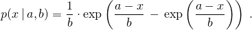

An extreme_value_distribution random number distribution produces random numbers x distributed according to the probability density function276 
template<class RealType = double>
class extreme_value_distribution{
public:
// types
using result_type = RealType;
using param_type = unspecified;
// constructor and reset functions
explicit extreme_value_distribution(RealType a = 0.0, RealType b = 1.0);
explicit extreme_value_distribution(const param_type& parm);
void reset();
// generating functions
template<class URBG>
result_type operator()(URBG& g);
template<class URBG>
result_type operator()(URBG& g, const param_type& parm);
// property functions
RealType a() const;
RealType b() const;
param_type param() const;
void param(const param_type& parm);
result_type min() const;
result_type max() const;
};
explicit extreme_value_distribution(RealType a = 0.0, RealType b = 1.0);
Requires: 0 < b .
Effects: Constructs an extreme_value_distribution object; a and b correspond to the respective parameters of the distribution.
Returns: The value of the a parameter with which the object was constructed.
Returns: The value of the b parameter with which the object was constructed.
The distribution corresponding to this probability density function is also known (with a possible change of variable) as the Gumbel Type I, the log-Weibull, or the Fisher-Tippett Type I distribution.